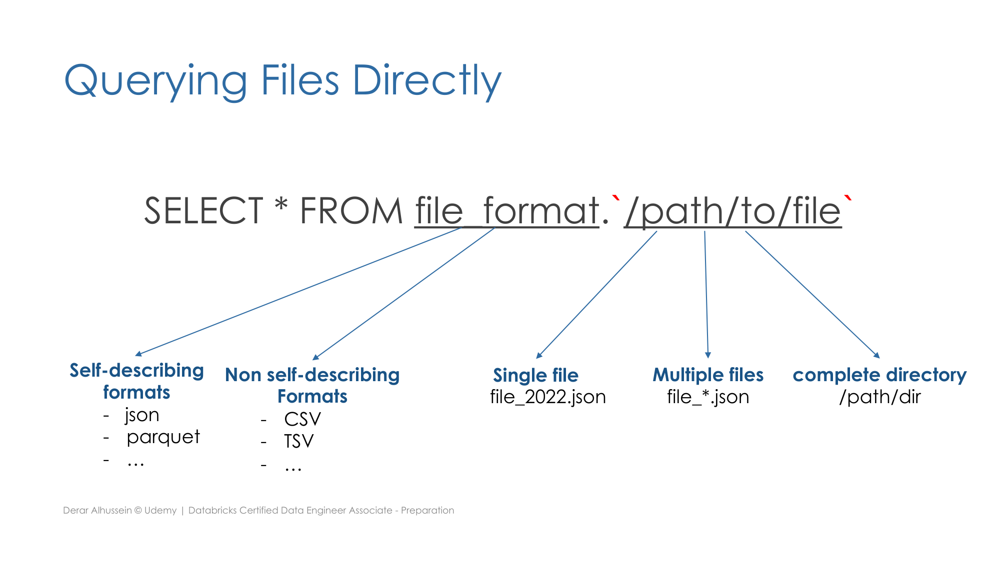

Section 3 · Data Transformation and Modelling · Quelle: Udemy-Kursmaterial „Querying Files“, ergänzt mit Databricks-Dokumentation
Bevor Rohdaten transformiert oder in eine Delta-Tabelle geladen werden, lassen sie sich oft schon direkt am Speicherort per SQL abfragen – ganz ohne vorherige Ingestion. Dieses Kapitel zeigt diese leichtgewichtigen Techniken sowie eine wichtige Einschränkung, die dabei entstehen kann, und wie man sie auflöst.
Mit einer einfachen SELECT-Anweisung lässt sich der Inhalt von Dateien abfragen, ohne vorher eine Tabelle anzulegen. Dabei wird statt eines Tabellennamens das Dateiformat gefolgt vom Pfad in Backticks angegeben (keine einfachen Anführungszeichen!):
SELECT * FROM json.`/Volumes/main/default/raw/file_name.json`;
Diese direkte Abfrage funktioniert gut bei selbstbeschreibenden Formaten wie JSON oder Parquet, die ihr Schema in der Datei selbst mitführen. Bei nicht selbstbeschreibenden Formaten wie CSV oder TSV liefert sie dagegen kaum brauchbare Ergebnisse, da Spaltennamen und -typen fehlen. Der Pfad kann dabei auf drei Arten angegeben werden:
file_2022.json),file_*.json),/path/dir) – vorausgesetzt, alle enthaltenen Dateien teilen sich dasselbe Format und Schema.
Manchmal soll eine Datei bewusst nicht automatisch interpretiert werden – etwa wenn die Eingabedaten fehlerhaft sein könnten und stattdessen mit eigener Parsing-Logik behandelt werden sollen. Für textbasierte Formate (JSON, CSV, TSV, TXT) liefert das Format text jede Zeile als rohen String:
SELECT * FROM text.`/Volumes/main/default/raw/file_name.csv`;
Für Bilder oder andere unstrukturierte Binärdaten liefert binaryFile stattdessen den rohen Byte-Inhalt jeder Datei:
SELECT * FROM binaryFile.`/Volumes/main/default/raw/images`;
Um aus einer direkten Dateiabfrage eine persistente Delta-Tabelle zu machen, genügt eine CTAS-Anweisung (siehe auch Section 1, Kapitel 6, und Section 2, Kapitel 1):
CREATE TABLE bronze_table AS SELECT * FROM parquet.`/Volumes/main/default/raw/orders`;
Wie bereits bekannt, leitet CTAS das Schema automatisch aus dem Abfrageergebnis ab und unterstützt keine manuelle Schema-Deklaration und keine zusätzlichen Datei-Optionen (z. B. Trennzeichen oder Encoding bei CSV). Damit eignet sich dieser Weg vor allem für Quellen mit sauber definiertem Schema wie Parquet – nicht aber für CSV-Dateien, die meist zusätzliche Optionen benötigen.
Werden zusätzliche Optionen benötigt (z. B. ein CSV-Trennzeichen), kommt die klassische CREATE TABLE-Anweisung mit dem Schlüsselwort USING zum Einsatz:
CREATE TABLE users_csv ( id INT, name STRING, email STRING ) USING CSV OPTIONS (header = "true", delimiter = ";") LOCATION "/Volumes/main/default/raw/users";
Auf demselben Weg lässt sich auch eine externe SQL-Datenbank über eine JDBC-Verbindung anbinden (siehe auch Section 2, Kapitel 7 für die Python-Variante mit spark.read.format("jdbc")):
CREATE TABLE customers_ext (
id INT, name STRING, email STRING
)
USING JDBC
OPTIONS (
url = "jdbc:postgresql://hostname:5432/salesdb",
dbtable = "public.customers",
user = "app_user",
password = secret("db-scope", "db-password")
);
Entscheidend: Mit USING entsteht immer eine External Table (siehe Section 1, Kapitel 5) – und zwar eine, die kein Delta-Format hat! Es findet beim Erstellen keine Datenbewegung statt; die Tabelle verweist lediglich auf die Dateien bzw. die Datenbank am angegebenen Ort, in deren ursprünglichem Format.
Da eine solche Tabelle kein Delta-Format hat, gelten die vertrauten Delta-Lake-Vorteile hier nicht: kein Time Travel, keine Garantie, stets die aktuellste Version zu lesen, und bei einer sehr großen, direkt angebundenen Datenbanktabelle drohen zudem Performance-Probleme, da jede Abfrage erneut gegen die externe Quelle ausgeführt wird.
Die Lösung: Statt die externe Quelle dauerhaft als Tabelle zu registrieren, bindet man sie zunächst nur als Temporary View ein (siehe Section 1, Kapitel 7) und wandelt diese anschließend per CTAS in eine waschechte, materialisierte Delta-Tabelle um:
-- Schritt 1: externe Quelle nur als Temp View einbinden
CREATE TEMP VIEW customers_ext_vw (id INT, name STRING, email STRING)
USING JDBC
OPTIONS (
url = "jdbc:postgresql://hostname:5432/salesdb",
dbtable = "public.customers",
user = "app_user",
password = secret("db-scope", "db-password")
);
-- Schritt 2: Daten einmalig extrahieren und als Delta-Tabelle materialisieren
CREATE TABLE customers_bronze
AS SELECT * FROM customers_ext_vw;
Bemerkenswert dabei: CTAS ist nicht auf Dateien beschränkt – als Quelle für den SELECT-Teil kann ebenso gut eine View, eine bestehende Tabelle oder jedes andere abfragbare Objekt dienen. Nach diesem zweistufigen Vorgehen liegen die Daten als vollwertige Delta-Tabelle vor, mit allen gewohnten Garantien.
CREATE TABLE ... USING die in Section 2 behandelte Funktion read_files() zu verwenden – sie deckt dieselben Formate ab (inkl. text und binaryFile), erlaubt aber zusätzlich Schema-Angaben und Datei-Optionen direkt in der Abfrage, was mit reinem file_format.path-Zugriff nicht möglich ist. Für Zugangsdaten in der OPTIONS-Klausel (wie im JDBC-Beispiel) rät Databricks statt Klartext-Passwörtern zur secret()-Funktion, die einen in einem Secret Scope hinterlegten Wert referenziert.